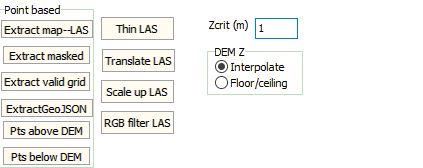

|
 |
Tools tab: Many of these options require that the base
map in use have a DEM associated with it, which will determine the size
of the grid created. Point based
- Extract map LAS, Extract masked, Extract valid
grid:
- Extract points on the current map, which might be
in multiple files, into a single
LAS file or
3D shapefile. Pick
a small map area for this option.
- For mask option,
the current map must have a mask in red,
and only points that project to a red
pixel on the map will be extracted.
- For extract valid grid, only points
that map to valid values in the DEM
associated with the map will be
extracted.
- Extract GeoJSON: create file for current map area
- Points above DEM, Points below DEM: puts the points above or
below the DEM on the map into the memo box on the right of the form.
This uses the Zcrit defined below.
Others
- Thin LAS
- Translate LAS
- Scale up LAS
- RGB filter las
Zcrit: buffer added to DTM before deciding if point is not on the
ground.
DEM Z:
- Interpolate: get elevation with bilinear interpolation.
- Floor/ceiling: get elevation from highest or lowest, as
appropriate, of the 4 grid nodes surrounding the point cloud
location. This can be better in regions of steep slope in the
DEM.
|